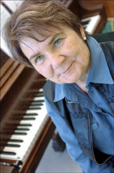

Les petits chanteurs, octobre 2009
La Maîtrise
Notre équipe de musiciens professionnels, sous la direction de Mme Céline Binet, veille à l'épanouissement musical des petits chanteurs.


Notre Équipe
Notre équipe de musiciens professionnels, sous la direction de Mme Céline Binet, veille à l'épanouissement musical des petits chanteurs.
Structure actuelle:
- Accueil
- Concerts et autres activités à venir et passés
- Nouvelles
- Concerts et autres activités à venir et passés
- Comédie musicale avec les jeunes du secondaire
- Corporation
- Règlements de la corpo
- Tournées de 2002 à 2016
- Présentation
- Concerts
- Concerts à venir et passés (plus complet)
- Historique
- Directrice artistique
- Inscription
- Le magasin
- Heures d'ouverture, uniformes (classe concert...)
- Images et sons
- Contact
- Adresses courriel + téléphones
- Liens utiles
- Tournées
- Hors menu: info-parents
Structure proposée:
- Accueil
- Photos, vidéo?, idéalement (prochain/dernier concert, post facebook?), Courte présentation de la maîtrise, de l'équipe.
- La maîtrise
- regroupe les pages Présentation, Historique, Directrice artistique, contact? (ou seulement en pied de page), ajout de l'équipe, Liens vers les partenaires
- Parents
- Calendrier (post facebook?), Uniformes, magasin, Règlements de la corpo, Coûts?
- Réalisations
- Vidéos?, Tournées, Concerts passés, Prix gagnés...
- Inscription
- Pied de page:
- Adresses courriel + téléphones
- Nouvelles, concerts, comédie musicale → Page Facebook